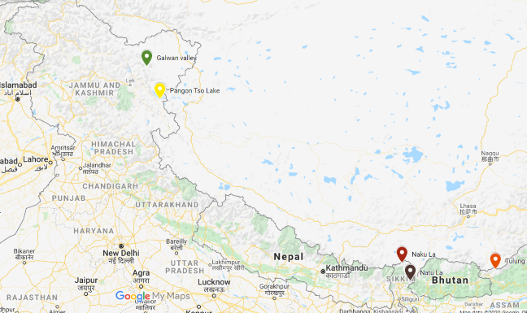

Unraveling the reorient policy.

As the ongoing standoff at LAC continues to make headlines there is no sign of peace soon, while the threat was lingering since early May it got shoot up on June 15th when reports came in that we have lost 20 brave soldiers in a deadly clash at Galwan Valley, as perceived fr0m the media it seems the issue will take a lot of time to resolve; meanwhile, we need to understand how did we came here and what lies ahead and what needs to be done.
Belligerent China.
Under the Leadership of Xi Jinping China has moved away from the policy of its predecessors which worked on the idea of "Hide your capacity and bide your time" on the contrary now it wants to assert its power over other nations and the clash at Galwan is one piece of its arrogance, the clash has a gamut of factors which moved China to act.
Firstly, since the advent of the pandemic, members of Communist Party of China (CPC) has raised apprehension over the leadership of Xin Jinping in handling the situation; so, in a bid to divert the attention and take the advantage of the situation when nations are busy in fighting the virus this move was played out.
Secondly, there are regional factors which came to play for instance increase in the infrastructure projects at the border under the government of NDA since 2014 and by the decision which was taken on August 5th which made Ladakh under the Central leadership, by the assertion made by Honorable Home Minister to take back Pakistan Occupied Kashmir (Pok) and Aksai Chin which certainly raised the eyebrows of Beijing which perceives it as a threat to its China Pakistan Economic Corridor(CPEC), Evidently the whole standoff got triggered after the inauguration of Darbuk-Shyokh-Daulat Beg Oldie Road (DSDBO) road which provides the Indian military access to the section of Tibet-Xinjiang highway that passes through Aksai Chin.
Third, and by far the most important is Current China is the new ambitious rising China which wants to reorient the global world order according to their terms and fill the new void created by back-slash of the USA from the global forums. Beijing doesn't see India as a swing state
any more it perceives us as the west terms "Counterweight to China", They want to send out a definite message they are not deterred by the "counterweight" to all the rivals.
China is consolidating the power as the moves of Chess, one by one as can be seen in the South China Sea, Security Law of Hong Kong, Taiwan and now India, which is one slice of the game in their ultimate aim.
Moves of India?
For India, is one of the players in this game of chess and threat of China is a concern of National security which should be handled with very cautiously, New Delhi needs to cast out a grand strategy which comprises of both short term and long term plans to stand strong to this new dominant China.
New Delhi has a range of arsenals to start and work with as it also has strong political support to do so in a coherence, Taking a cue from the past we have the following areas to take up.
- Fortifying the border: Although since 2014 there has been an increase in the infrastructure projects; however, there is still a lot to do and there is a lot of room to fill the space especially in the regions of Arunachal Pradesh, Sikkim and Ladakh.
- Engaging neighbours: Currently our relations with the neighbouring countries are not good ranging from the evergreen Pakistan inflicted terrorism issue, Kalapani issue with Nepal, CAA issue with Bangladesh, New Delhi should reach out its neighbour especially the one bordering with China and make amiable friendly relations with them in addition to that we need to revisit the treaties which are important and has been under the cold-box for years, For ex: we have updated our treaty of friendship with Bhutan in 2007 but the same is still pending with Nepal.
- Building capacity: India-China bilateral trade stands highly in favor of China, and New Delhi faces a deficit which needs to be cut down strategically, by improving the manufacturing capacity by encouraging "Make in India" especially in the field of medicine, electronics and fertilizers, a step has been taken in this as we have launched the project of Pharma park which will remove dependence on China in the future for API.
- Alliance and International Forums:The reticent attitude of Delhi on Uighur Muslims, Security law of Hong Kong, South China sea has not helped India; therefore, India should play a bigger role in curtailing china, though the QUAD has been formed it offers little and now by the invitation of G7 and idea of D10 which can be a good move, therefore; it should be accepted; however, New Delhi should be prudent not to give space to the USA completely as evident from the example of Pakistan which was an ally of them for a long time.
All this said but New Delhi should be careful of the proclivity in the relation between China and Pakistan, it should not conflate them with the same eye as the issue with China is of strategic interest and assertion of power but with Pakistan, the scenario is completely different. Growing arrogative China should be a wakeup call to India and the Eastern nations.